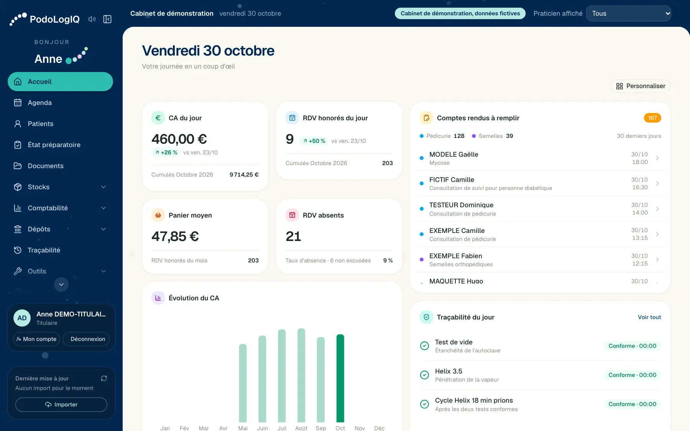
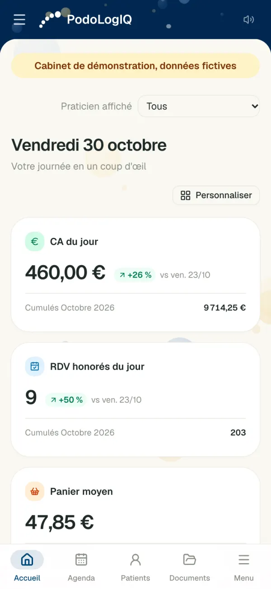
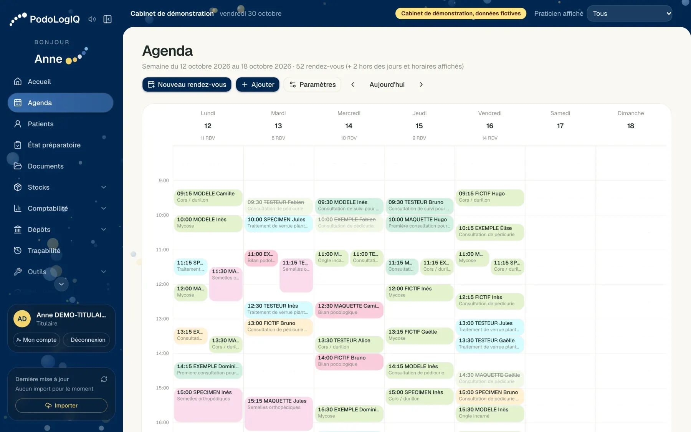

Agenda et rendez-vous
Vue par semaine, rendez-vous saisis ou importés, statuts honoré, prévu, absent ou annulé, absences et notes récurrentes, réglages d'affichage, plusieurs praticiens.
Agenda, dossiers patients, relevés, stérilisation, dépôts et comptabilité réunis au même endroit. Vos rendez-vous Doctolib s'y retrouvent, vos documents se préparent à partir de vos séances, et chaque cabinet garde ses données cloisonnées.
Logiciel en ligne (SaaS) : rien à installer, sur ordinateur, tablette et téléphone.


Une journée au cabinet
PodoLogIQ suit le rythme réel d'un cabinet. Chaque étape reprend ce que la précédente a déjà saisi.
L'accueil affiche vos rendez-vous, ce qu'il reste à régler, les comptes rendus en attente et les tests de stérilisation du jour. Vous le composez avec les indicateurs qui vous servent.
Constats, gestes, lots de consommables et kits stérilisés : le compte rendu se rédige depuis le rendez-vous, dans le dossier du patient.
Tous les relevés de la journée sur un seul écran : ordonnance, tiers payant et règlement. Vous validez, le devis et l'impression suivent.
Sélectionnez les règlements à déposer, découpez un paiement en plusieurs chèques, imprimez le bordereau et gardez le ticket de la banque.
Chiffre d'affaires, répartition par motif, charges, résultat, rapports et redevance de chaque collaborateur.
Visite guidée
Ce sont de vraies captures, prises sur un cabinet de démonstration aux données entièrement fictives.

Votre semaine, avec les rendez-vous importés ou saisis, les absences et les notes. Les rendez-vous prévus se confirment en fin de journée, ou à l'import.
Fonctionnalités
Conçu pour la podologie, pas adapté d'un logiciel généraliste : semelles, bilan du pied diabétique, stérilisation et tiers payant font partie du socle.
Vue par semaine, rendez-vous saisis ou importés, statuts honoré, prévu, absent ou annulé, absences et notes récurrentes, réglages d'affichage, plusieurs praticiens.
Importez votre export, en CSV ou Excel. Chaque agenda va à son praticien, un réimport ne crée pas de doublon, et le rapport signale les écarts et les lignes à rapprocher. Ce que vous avez modifié dans PodoLogIQ est conservé.
Identité, régime, antécédents, allergies, traitements, entourage, professionnels de santé, documents joints, exonérations.
Générés depuis le rendez-vous, selon vos règles par motif : semelles, bilan, séances. Tiers payant AMO et AMC, ALD et CSS pris en compte.
Carte, espèces, chèques, plusieurs moyens sur une même séance, reste à payer visible, suivi du tiers payant reçu.
Ordonnances, certificats, courriers et comptes rendus, avec modèles, signature et cachet. Impression à l'unité, par journée ou par mois.
Tests de vide, Helix, cycles prions, autoclave, kits d'instruments, photos et étiquettes.
Tableau de bord, charges, import du grand livre, statistiques par motif et par praticien, rapports, export.
Constats, gestes, lots de consommables, kits utilisés, paires de semelles et renouvellements à prévoir.
Articles, seuils d'alerte, mouvements, ajout en masse et carnet de fournisseurs.
Remises de chèques, dépôts d'espèces par billets et pièces, chèques à encaisser plus tard, bordereaux.
Aide à la facturation, carnet de confrères, rentabilité d'un acte, simulateur de revenu net.
Sur ordinateur, tablette et téléphone, sans rien installer : le logiciel s'ouvre dans le navigateur.
Accueil personnalisable et modules que vous activez ou masquez, sans jamais perdre de données.
Solo ou groupe
L'essentiel, sans ce dont vous n'avez pas besoin.
Chaque libéral reste une entité distincte.
Tout : comptabilité, redevances, comptes, réglages et modules.
Le soin et ses documents. Dans un cabinet de groupe : ses chiffres, et les créneaux des autres sans leurs détails.
Agenda, patients, relevés et devis. Ni comptes rendus, ni ordonnances, ni chiffre d'affaires à l'accueil.
Sécurité et confidentialité
Les mesures ci-dessous sont déjà dans le logiciel, pas dans une feuille de route.
Un espace de base de données et un rôle dédiés à chaque cabinet. Le rôle d'un cabinet n'a aucun droit sur les autres.
Obligatoire pour tous, avec codes de secours. Mot de passe de 12 caractères au minimum.
Documents, signatures et photos chiffrés en AES-256-GCM. Connexion en HTTPS uniquement.
Consultations de dossier, exports, créations, modifications et suppressions : qui, quand, quoi.
Déconnexion après 30 minutes d'inactivité, compte verrouillé 15 minutes après 5 échecs, protection du navigateur renforcée.
Vérifiés côté serveur sur chaque page et chaque action, pas seulement masqués à l'écran.
Base et fichiers, chiffrés avec une clé dédiée, intégrité vérifiée après chaque sauvegarde.
Export complet du dossier, en PDF avec ses fichiers. Effacement, refusé tant que des pièces comptables doivent être conservées.
Un document émis garde l'identité qu'il portait. Un numéro supprimé n'est jamais réattribué, et le motif est conservé.
Mise en route
À votre première connexion, un assistant vous guide et dit précisément ce qu'il reste à faire. Notre objectif : moins de 30 minutes.
Nom d'exercice, RPPS, numéro AM.
SIRET, signature, cachet, RIB. À passer si besoin.
Structure, adresse, logo.
Actes, motifs et tarifs proposés, à vérifier.
Votre export Doctolib, ou la saisie directe.
Comptes du secrétariat et des collaborateurs.
En toute transparence
Pour choisir en connaissance de cause.
PodoLogIQ ne lit pas la carte Vitale et n'envoie pas de feuilles de soins électroniques. Il prépare les relevés et suit les règlements, et complète votre outil de télétransmission.
Vos patients continuent de réserver sur Doctolib. PodoLogIQ reprend ces rendez-vous par import de fichier, ou vous les saisissez directement.
Les barèmes et les tarifs proposés sont à vérifier par vos soins. Le suivi financier ne remplace ni votre comptable ni votre AGA.
Pourquoi nous faire confiance
PodoLogIQ est né d'un cabinet pilote. Règle de chaque évolution : ce cabinet doit continuer de produire exactement les mêmes relevés, devis et comptes rendus, et des tests automatiques figent ce comportement.
Tarifs
Il dépend de votre nombre de praticiens. Essayez la démo : nous vous écrivons avec le tarif de votre cabinet.
Un praticien, avec ou sans secrétariat.
Plusieurs praticiens libéraux, redevances et identités séparées.
Questions fréquentes
Non. PodoLogIQ importe votre export Doctolib, en CSV ou Excel, et rattache chaque agenda à son praticien. Réimporter ne crée pas de doublon. Vous pouvez aussi saisir vos rendez-vous directement, sans Doctolib. Il s'agit d'un import de fichier, pas d'une synchronisation automatique.
Non. PodoLogIQ ne gère ni la carte Vitale ni les feuilles de soins électroniques. Il complète votre outil de télétransmission : relevés, devis, suivi du tiers payant et des règlements.
PodoLogIQ est conçu pour être exploité chez un hébergeur certifié HDS, comme l'exige la réglementation française pour ces données. Son nom, son certificat et le contrat de sous-traitance vous sont communiqués avant la mise en service.
Non. Un praticien collaborateur voit ses documents, ses règlements et ses chiffres. Dans l'agenda, il voit les créneaux occupés des autres praticiens, sans le nom du patient ni le motif. Le dossier clinique du patient reste commun au cabinet.
Non. PodoLogIQ s'ouvre dans le navigateur, sur ordinateur, tablette ou téléphone.
Les cotations et les bases de remboursement viennent d'un référentiel daté, et le logiciel signale ce qui reste à vérifier. Les honoraires sont des propositions : c'est à vous de les valider pour votre cabinet.
Vos nouveaux documents prennent la nouvelle identité. Ceux déjà émis gardent celle qu'ils portaient, sans exception.
Oui. Le titulaire active ou masque les stocks, les fournisseurs, la stérilisation, les dépôts, les redevances et les outils. Masquer un module ne supprime aucune donnée.
Oui. Le dossier complet s'exporte en PDF, avec ses fichiers joints. C'est ce qui permet de répondre à une demande d'accès ou de portabilité.
Démo
Un mini-aperçu de deux minutes, sans rendez-vous ni téléphone. Validez votre e-mail, et vous essayez quelques gestes sur un cabinet fictif. Le vrai logiciel va bien plus loin.